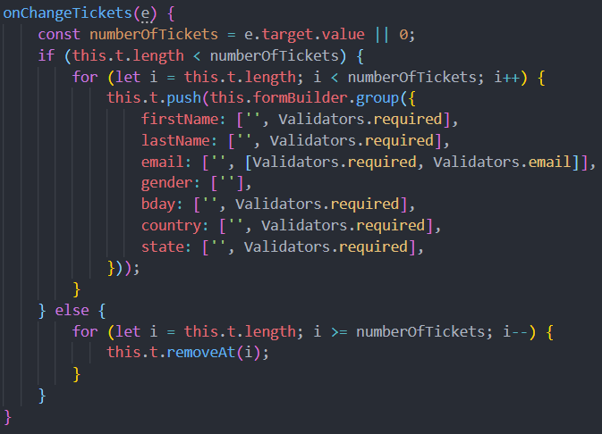

What: Demonstrate how to take advantage of Angular reactive-forms
Why: Reactive forms can really help make your app feel responsive and efficient
How: Utilizing FormBuilder, FormControl, and Validators
Angular has two different types of forms, Template Driven Forms and Reactive Forms.
On the outside these two different form types may seem similar but underneath they are fairly different.
I have recently been looking at cruises to go on after I graduate. I have visited many different sites, one of which I saw a cool function
that was practical. I wanted to to and implement it myself using reactive forms.
What I wanted to recreate was when the potential customer inputs the number of people travelling, it generates n number of forms for
each person to fill out. These forms contain things like name, email, birthday, etc. This led me to where this app is now. Still a work in progress!
Working with reactive forms have made me aware of some key benefits of choosing reactive over template. They are listed below:
To make a reactive form, I used a form group. A form group allows you to define fields and specify if they are required or not.
Once the form, with its fields, is created I made a binding to the form element using the [formGroup] directive.
This is basically telling the form to have a place for the FormGroup fields to live.
Below is where I created the FormGroup and where I am binding my template using the formGroup directive:
This reactive form has two form controls:
My onChangeTickets function is where to reactivness happens. The number of tickets will increment or decrement depending on the input of the select element. Below is my code:

I also created a onSubmit(), onReset(), and onClear() methods. The onSubmit() method simply validates the form to makes sure
there are no errors, then, if no errors, "submits" them by converting them to json and displaying that to the user.
The onReset() method simply resets the form to its inital state removing any values previously input. And removing all tickets completely
The onClear() method simply clears the form removing and input and any validation messages.